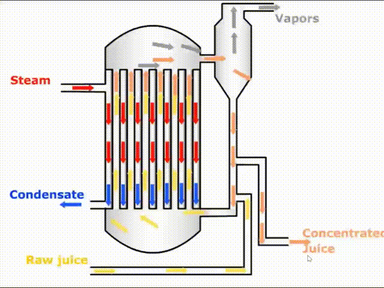

The brand's icon is inspired by a classic tarot card, symbolizing new beginnings and bringing a change with creativity, to take a risk and try something new, which is exactly what our team is doing: using our innovations to bring a change.
Model
Get to know us
Welcome to EcoXtra, where innovation meets sustainability. We focus on an innovative evaporator-specific
scale inhibitor. This product provides customized solutions to the needs of different industries and solves
real problems in the industrial sector. Our goal is to utilize our knowledge and innovation capabilities to
enhance the sustainability of industrial production by reducing energy consumption, increasing productivity,
and reducing environmental pollution.
We understand that no successful project is accomplished by working alone. Our team consists of high school
students with diverse backgrounds and specialties, and everyone is an integral part of the team.
Innovation is the core of our team. We are always seeking better solutions. From design, marketing,
modeling, and video production, every late-night online meeting witnessed our pursuit of excellence.
Everyone in our team is passionate about innovation. We learn together, face hardships together, and
celebrate successes together. The process is full of challenges, however, we never give up. We believe that
through our efforts, we can make a real difference in industrial production and the environment.
Environmental Benefits:
By providing an innovative and environmentally-friendly scale inhibitor, this project significantly reduces the need for traditional acid-alkaline cleaning methods, thereby minimizing water pollution and chemical waste. This contributes to preserving natural ecosystems and promoting sustainable industrial practices.
Economic Efficiency:
The high descaling rate (over 98%) of our product ensures enhanced operational efficiency and prolonged equipment lifespan across various industries. This leads to cost savings for clients, as they experience reduced downtime, maintenance costs, and energy consumption, ultimately boosting their overall profitability.
Market Growth and Job Creation:
Anticipating a rapid market growth for evaporator scale inhibitors, this project is poised to create new business opportunities and stimulate economic activity. With estimated annual sales volumes and revenues, it will contribute to the local and national economy, while also generating job opportunities for skilled workers in research, production, and sales.
Technological Innovation:
The project fosters technological advancement in the field of industrial water treatment, setting new benchmarks for efficiency and sustainability. This innovative approach encourages other companies to adopt similar eco-friendly practices, driving overall industry progress.
Product Innovation
The evaporator scale inhibitor showcases innovation in several areas. It offers customized formulations tailored to water quality, production processes, equipment types, and operational environments, ensuring optimal performance for each client.
Eco-friendly and efficient
The evaporator scale inhibitor contains no harmful chemicals, prevents mineral deposition, extends equipment life, and boosts thermal efficiency, leading to energy savings. Leveraging advanced dispersion technology, it enhances mineral dispersion and stability without disrupting production or increasing maintenance costs, unlike traditional methods.
Market Feasibility
With the ongoing acceleration of industrialization and tightening environmental regulations, the demand for evaporator scale inhibitors is gradually expanding. We assumed that the demand for our products will continue increase.